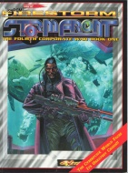

|  | Fiche technique |
| Scénario pour le jeu de rôles Cyberpunk 2020, édité par R. Talsorian Games (1997) | |
| Langue | Français |
| Thème | Guerre corporatiste |
| Qualité du background | 4 / 5 |
| Qualité des scénarii | 4 / 5 |
| Qualité des règles | 3 / 5 |
| Qualité des illustrations | 4 / 5 |
| Qualité de l'écriture | 3 / 5 |
Premier opus de "la-campagne-de-la-fin-du-monde", cette campagne est militaro-militaire dans l'âme. Elle est cependant suffisement bien pensée pour ne pas être linéaire et dirigiste. Tout commence par un "petit" conflit entre deux corpos qui se disputent les restes d'une troisième en faillite. Black ops à gogo, nouvelles carrières (maître de plongée, techie spécialisé, etc), nouveaux matos et armes. Les scénarios se présentent comme des synopsys qu'il faut retravailler pour en sortir un truc jouable. Le dernier est un chef d'oeuvre... Le background est détaillé et explique les tenants et aboutissants de cette gué-guerre mondiale (en localisation). Si vous aimez la mer et les actions sous couvertures, jetez vous dessus.
{kind=link}